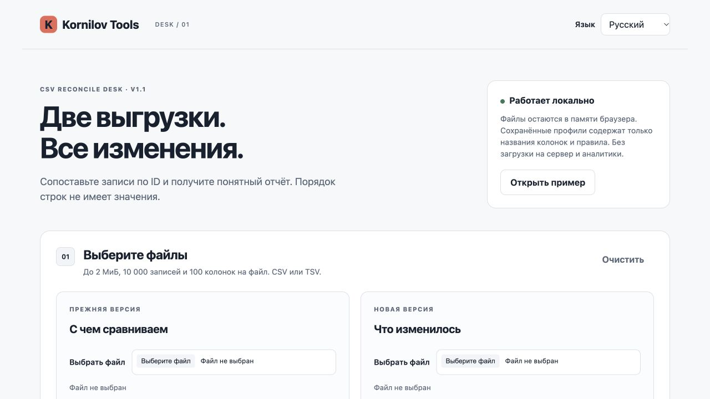

CSV Reconcile Desk
Two exports. One clear list of changes.
Match records by ID, map corresponding columns and export a reconciliation report.
| ID | Field | Before | After |
|---|---|---|---|
| 001 | Stock → Qty | 10 |
Duplicate and empty IDs are reviewed separately.
Demonstration only. Projects, people and numbers are fictional.
Who it is for
For developers, analysts and operations specialists comparing small CSV exports.
What you get
- Match on one ID column
- Up to 30 reusable field-mapping profiles
- Added, removed, changed and unchanged records
- Separate ambiguous IDs; CSV/JSON reports

How it works
Paid tools come in a ZIP: extract the folder and open index.html in a desktop browser. There are no dependencies to install and no separate in-tool account. Keep JSON backups of your workspace; the mobile site is primarily for exploring the product.
How you can use it
Personal and commercial internal use. A business purchase covers one team of up to five people. Share reports with clients. Hosting the application as a public service is not included.
Full licenseOne-time purchase and subscriptions
The purchase button opens the specific Boosty post. You can buy this product once. If you already have a qualifying subscription, check access in your account first. Boosty subscriptions are billed separately and may renew; review the selected option before payment.
Support and updates
Need help with the files or the tool? Message the creator on Boosty. Include the product, version and browser. A changelog is included in the ZIP. Future updates and new products are not promised as part of a one-time purchase.